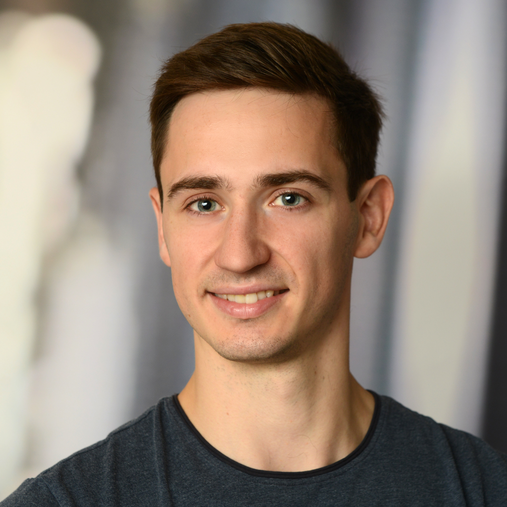

Jonas Spinner
Particle Physicist and Machine Learner
I am a PostDoc at the IPPP at Durham University. My research is all about developing computational methods to better understand the fundamental building blocks of the universe. The trick is to encode our rich knowledge of physics into these tools, and in 2026 machine learning is the prime method for doing this. On the technical side, I'm especially into equivariant neural networks, which hard-code symmetries into the architecture, and generative modelling.
I did my PhD in Tilman Plehn's group at Heidelberg University, where I started my journey at the intersection of fundamental physics and machine learning. Before getting into machine learning, I studied physics at the Karlsruhe Institute of Technology, focusing on the phenomenology of new light particles at the LHC and in the early universe. For my BSc thesis, I worked on effective field theories for new neutrino interactions. My MSc thesis was about constraining light new physics in supernovae. I also spent six months at the IPPP in Durham, looking into the Axion-Higgs portal – a hypothetical particle with some pretty interesting properties.
Over the years, I've really enjoyed presenting our work at different places. You can check out this repository for a list of talks and PDF versions of my slides. I'm always up for chatting about our latest papers.
Want to know more? Have a look at my CV.
-
Luigi Favaro, Tilman Plehn, Huilin Qu, Jonas Spinner:
Virtues and Vices of Equivariant Transformers
[arxiv] [code] -
Antoine Petitjean, Tilman Plehn, Jonas Spinner, Ullrich Köthe:
Economical Jet Taggers - Equivariant, Slim, and Quantized
[arxiv] [code] [package] -
Antoine Petitjean, Anja Butter, Kevin Greif, Sofia Palacios Schweitzer, Tilman Plehn, Jonas Spinner, Daniel Whiteson:
Generative Unfolding of Jets and their Substructure
[arxiv] [code] -
Henning Bahl, Sascha Diefenbacher, Nina Elmer, Tilman Plehn, Jonas Spinner:
Forecasting Generative Amplification
[journal] [arxiv] [code] -
Luigi Favaro, Gerrit Gerhartz, Fred Hamprecht, Peter Lippmann, Sebastian Pitz, Huilin Qu, Tilman Plehn, Jonas Spinner:
Lorentz-Equivariance without Limitations
[arxiv] [code] [package] -
Claudio Andrea Mazari, Jorge Martin Camalich, Jonas Spinner, Robert Ziegler:
The SN1987A Cooling Bound on Dark Matter Absorption in Electron Targets
[arxiv] -
Jonas Spinner, Luigi Favaro, Peter Lippmann, Sebastian Pitz, Gerrit Gerhartz, Tilman Plehn, Fred Hamprecht:
Lorentz Local Canonicalization: How to Make Any Network Lorentz-Equivariant
NeurIPS 2025 [journal] [arxiv] [code] [package] -
Anja Butter, François Charton, Javier Mariño Villadamigo, Ayodele Ore, Tilman Plehn, Jonas Spinner:
Extrapolating Jet Radiation with Autoregressive Transformers
SciPost 2026 [journal] [arxiv] [code] -
Johann Brehmer, Víctor Bresó, Pim de Haan, Tilman Plehn, Huilin Qu, Jonas Spinner, Jesse Thaler:
A Lorentz-Equivariant Transformer for All of the LHC
SciPost 2025 [journal] [arxiv] [code] [package] -
Jonas Spinner, Víctor Bresó, Pim de Haan, Tilman Plehn, Jesse Thaler, Johann Brehmer:
Lorentz-Equivariant Geometric Algebra Transformers for High-Energy Physics
NeurIPS 2024 [journal] [arxiv] [code] [package] -
Claudio Andrea Manzari, Jorge Martin Camalich, Jonas Spinner, Robert Ziegler:
Supernova limits on muonic dark forces
PRD 2023 [journal] [arxiv] [code] -
Anja Butter, Nathan Huetsch, Sofia Palacios Schweitzer, Tilman Plehn, Peter Sorrenson, Jonas Spinner:
Jet Diffusion versus JetGPT - Modern Networks for the LHC
SciPost 2025 [journal] [arxiv] -
Martin Bauer, Guillaume Rostagni, Jonas Spinner:
Axion-Higgs portal
PRD 2023 [journal] [arxiv]